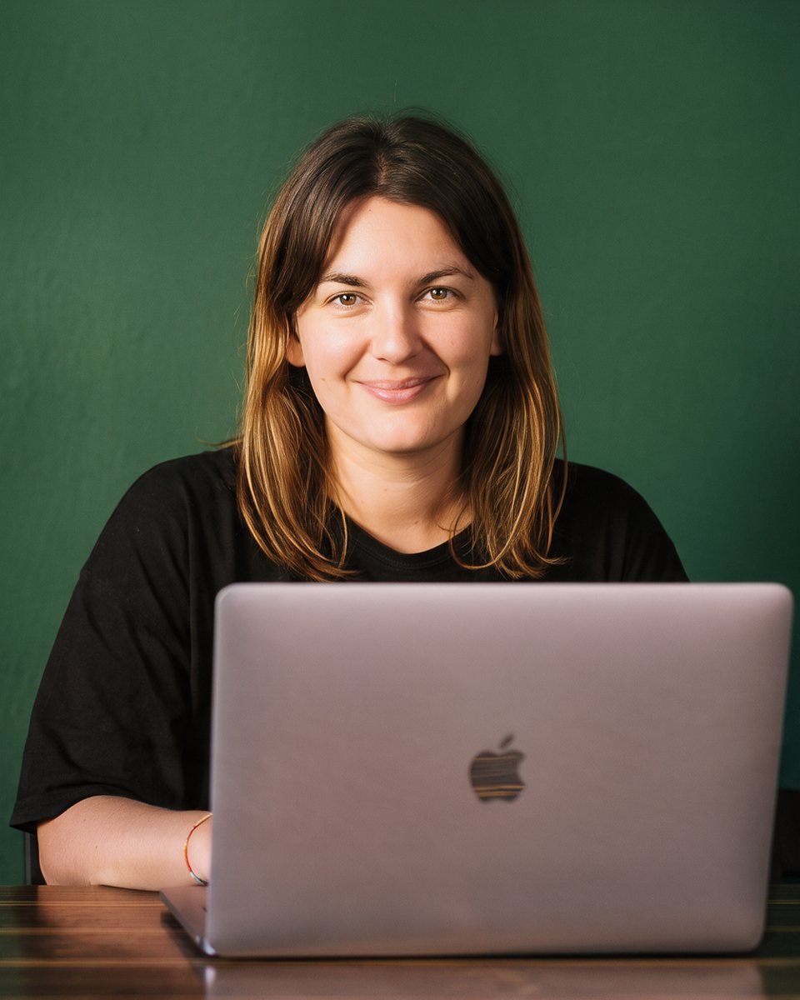

ana šercer / O meni
Hej, sem Ana.
Freelancerka za digitalni marketing iz Ljubljane. Malim podjetjem pomagam, da jih stranke najdejo: na Googlu, v ChatGPT in na družbenih omrežjih.

10 mest · 3 jeziki01 / Moja zgodba
Več kot 8 let delam v digitalnem svetu: kot marketinška strokovnjakinja, vodja marketinga in vodja spletnih projektov, od fintecha in e-commerca do wellnessa in nevladnih organizacij.
Študirala sem v Ljubljani, na Škotskem, v Kanadi, Turčiji in Urugvaju, delala pa v Španiji, Egiptu, na Češkem in v Boliviji. Na Ekonomski fakulteti v Ljubljani sem diplomirala iz marketinga in magistrirala iz mednarodnega poslovanja.
Danes kot samostojna podjetnica malim podjetjem prevzamem marketing za del časa. Podatke povezujem z intuicijo, strategijo z izvedbo, in vedno vem, kaj merimo in zakaj.
02 / Izkušnje
Celoten življenjepis pošljem na željo. Pišite mi
03 / AI v mojem delu
AI uporabljam vsak dan. Pametno.
AI vsebine
Članki, objave in e-novice hitreje, vedno urejeni v vaš ton.
AI vizuali in video
Slike in kratki videi za oglase in omrežja, brez snemanja.
Avtomatizacije
Procesi od obrazca do CRM-ja in e-novic, brez ročnega dela.
GEO in AI analitika
Vidnost v ChatGPT in poročila, ki jih prevedem v odločitve.
04 / Orodja
S čim delam.
05 / Priporočila
Ljudje, s katerimi sem delala.
"Ana je pokazala razumevanje strateškega razmišljanja in analitičnih veščin, ki so ključnega pomena pri obvladovanju kompleksnosti marketinških strategij."
Laure Faretti, CMO, xpate
Preberi celotno pismo →"Kar me je pri Ani najbolj navdušilo, je bila njena proaktivnost in težnja po izboljšavah."
Izidor Korpar, Country Manager, Multitude
Preberi celotno pismo →"Z naprednim razmišljanjem, ustvarjalnimi idejami in veščinami vsebinskega ustvarjanja se je Ana hitro prilagodila našemu tehnološko usmerjenemu občinstvu."
Gašper Štih, CMO, Blocktrade
Preberi celotno pismo →"Ana je naši ekipi prinesla sveže ideje, tehnično znanje in pristno strast."
Erik Taylor, direktor, Sustainable Bolivia
Preberi celotno pismo →06 / Izobrazba in jeziki
Magisterij, mednarodno poslovanje
Ekonomska fakulteta, Univerza v Ljubljani, Univerza Koç in METU (Turčija), 2015–2017
Diploma, marketing
Ekonomska fakulteta, Univerza v Ljubljani, University of Victoria, University of Strathclyde, Universidad de Montevideo, 2011–2014
Filmska režija in produkcija
JSKD Slovenija: režija, scenarij in montaža, 2023–2024
Jeziki
Slovenščina (materni jezik), angleščina (tekoče), španščina (višja srednja raven)